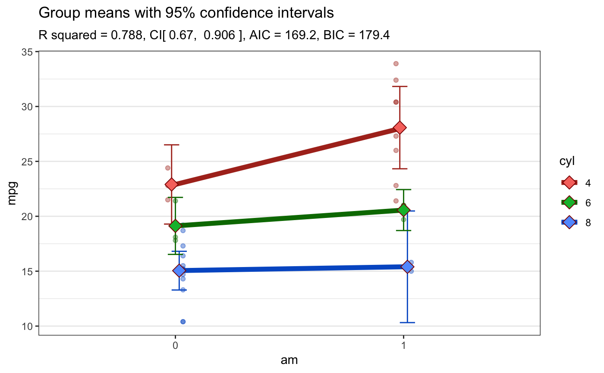
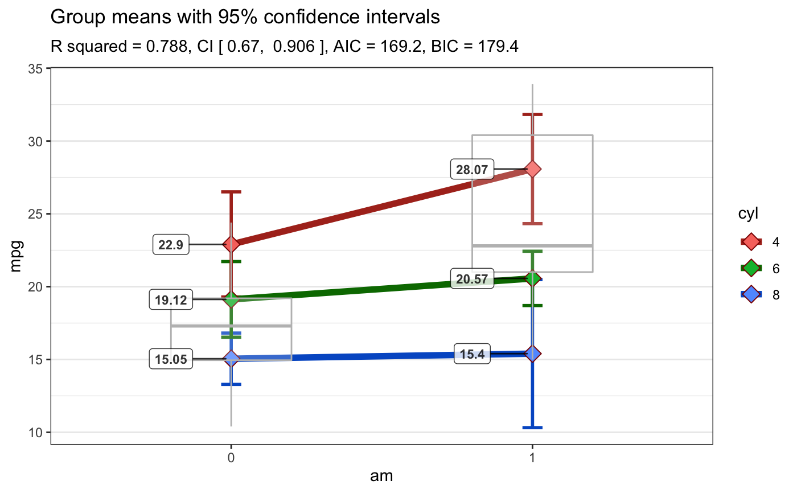
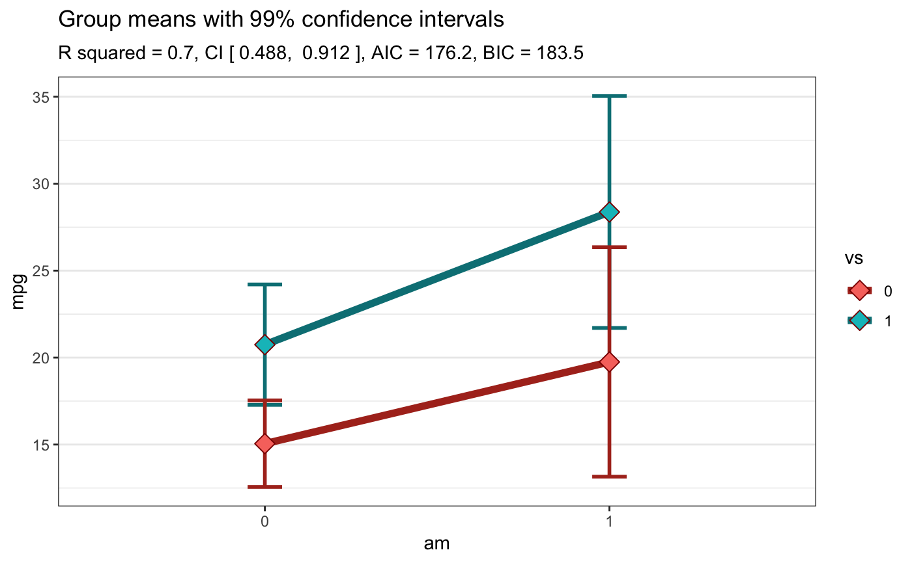

Takes a formula and a dataframe as input, conducts an analysis of variance prints the results (AOV summary table, table of overall model information and table of means) then uses ggplot2 to plot an interaction graph (line or bar) . Also uses Brown-Forsythe test for homogeneity of variance. Users can also choose to save the plot out as a png file.
Plot2WayANOVA(formula, dataframe = NULL, confidence=.95, plottype = "line", xlab = NULL, ylab = NULL, title = NULL, subtitle = NULL, interact.line.size = 2, ci.line.size = 1, mean.label = FALSE, mean.ci = TRUE, mean.size = 4, mean.shape = 23, mean.color = "darkred", mean.label.size = 3, mean.label.color = "black", offset.style = "none", overlay.type = NULL, posthoc.method = "scheffe", show.dots = FALSE, PlotSave = FALSE)
| formula | a formula with a numeric dependent (outcome) variable,
and two independent (predictor) variables e.g. |
|---|---|
| dataframe | a dataframe or an object that can be coerced to a dataframe |
| confidence | what confidence level for confidence intervals |
| plottype | bar or line (quoted) |
| xlab, ylab | Labels for `x` and `y` axis variables. If `NULL` (default), variable names for `x` and `y` will be used. |
| title | The text for the plot title. A generic default is provided. |
| subtitle | The text for the plot subtitle. If `NULL` (default), key model information is provided as a subtitle. |
| interact.line.size | Line size for the line connecting the group means (Default: `2`). |
| ci.line.size | Line size for the confidence interval bracketing the group means (Default: `1`). |
| mean.label | Logical that decides whether the value of the group mean is to be displayed (Default: `FALSE`). |
| mean.ci | Logical that decides whether the confidence interval for group means is to be displayed (Default: `TRUE`). |
| mean.size | Point size for the data point corresponding to mean (Default: `4`). |
| mean.shape | Shape of the plot symbol for the mean (Default: `23` which is a diamond). |
| mean.color | Color for the data point corresponding to mean (Default: `"darkred"`). |
| mean.label.size, mean.label.color | Aesthetics for the label displaying mean. Defaults: `3`, `"black"`, respectively. |
| offset.style | A character string (e.g., `"wide"` or `"narrow"`, or `"none"`) which controls whether items are offset from the centerline for clarity. Useful when you want to add individual datapoints or confdence interval lines overlap. (Default: `"none"`). |
| overlay.type | A character string (e.g., `"box"` or `"violin"`), if you wish to overlay that information on factor1 |
| posthoc.method | A character string, one of "hsd", "bonf", "lsd", "scheffe", "newmankeuls", defining the method for the pairwise comparisons. (Default: `"scheffe"`). |
| show.dots | Logical that decides whether the individual data points are displayed (Default: `FALSE`). |
| PlotSave | a logical indicating whether the user wants to save the plot as a png file |
A list with 5 elements which is returned invisibly. These items
are always sent to the console for display but for user convenience
the function also returns a named list with the following items
in case the user desires to save them or further process them -
$ANOVATable,$ModelSummary, $MeansTable,
$PosthocTable, $BFTest, and $SWTest.
The plot is always sent to the default plot device
Details about how the function works in order of steps taken.
Some basic error checking to ensure a valid formula and dataframe. Only accepts fully *crossed* formula to check for interaction term
Ensure the dependent (outcome) variable is numeric and that the two independent (predictor) variables are or can be coerced to factors -- user warned on the console
Remove missing cases -- user warned on the console
Calculate a summarized table of means, sds, standard errors of the means, confidence intervals, and group sizes.
Use aov function to execute an Analysis of
Variance (ANOVA)
Use anova_stats to calculate eta squared
and omega squared values per factor. If the design is unbalanced warn
the user and use Type II sums of squares
Produce a standard ANOVA table with additional columns
Use the PostHocTest for producing a table
of post hoc comparisons for all effects that were significant
Use the leveneTest for testing Homogeneity
of Variance assumption with Brown-Forsythe
Use the PostHocTest for conducting
post hoc tests for effects that were significant
Use the shapiro.test for testing normality
assumption with Shapiro-Wilk
Use ggplot2 to plot an interaction plot of the type the
user specified.
The defaults are deliberately constructed to emphasize the nature of the interaction rather than focusing on distributions. So while a violin plot of the first factor by level is displayed along with dots for individual data points shaded by the second factor, the emphasis is on the interaction lines.
: ANOVA: Delacre, Leys, Mora, & Lakens, *PsyArXiv*, 2018
Plot2WayANOVA(mpg ~ am * cyl, mtcars, plottype = "line")#> #>#> #>#> #> #> #> #> #> #> #>#> term sumsq meansq df statistic p.value etasq partial.etasq omegasq #> 1 am 36.767 36.767 1 3.999 0.056 0.049 0.133 0.036 #> 2 cyl 456.401 228.200 2 24.819 0.000 0.602 0.656 0.571 #> 3 am:cyl 25.437 12.718 2 1.383 0.269 0.034 0.096 0.009 #> 4 Residuals 239.059 9.195 26 NA NA NA NA NA #> partial.omegasq epsilonsq cohens.f power #> 1 0.086 0.036 0.392 0.515 #> 2 0.598 0.578 1.382 1.000 #> 3 0.023 0.009 0.326 0.298 #> 4 NA NA NA NA#> #>#> # A tibble: 1 x 11 #> r.squared adj.r.squared sigma statistic p.value df logLik AIC BIC #> <dbl> <dbl> <dbl> <dbl> <dbl> <int> <dbl> <dbl> <dbl> #> 1 0.788 0.747 3.03 19.3 5.18e-8 6 -77.6 169. 179. #> # … with 2 more variables: deviance <dbl>, df.residual <int>#> #>#> # A tibble: 6 x 9 #> # Groups: am [2] #> am cyl TheMean TheSD TheSEM CIMuliplier LowerBound UpperBound N #> <fct> <fct> <dbl> <dbl> <dbl> <dbl> <dbl> <dbl> <int> #> 1 0 4 22.9 1.45 0.839 4.30 19.3 26.5 3 #> 2 0 6 19.1 1.63 0.816 3.18 16.5 21.7 4 #> 3 0 8 15.0 2.77 0.801 2.20 13.3 16.8 12 #> 4 1 4 28.1 4.48 1.59 2.36 24.3 31.8 8 #> 5 1 6 20.6 0.751 0.433 4.30 18.7 22.4 3 #> 6 1 8 15.4 0.566 0.4 12.7 10.3 20.5 2#> #>#> #> Posthoc multiple comparisons of means : Scheffe Test #> 95% family-wise confidence level #> #> $cyl #> diff lwr.ci upr.ci pval #> 6-4 -4.756706 -10.029278 0.5158655 0.09684 . #> 8-4 -7.329581 -11.723391 -2.9357710 0.00024 *** #> 8-6 -2.572874 -7.620978 2.4752288 0.64828 #> #> --- #> Signif. codes: 0 '***' 0.001 '**' 0.01 '*' 0.05 '.' 0.1 ' ' 1 #>#> #>#>#> Levene's Test for Homogeneity of Variance (center = median) #> Df F value Pr(>F) #> group 5 2.736 0.04086 * #> 26 #> --- #> Signif. codes: 0 ‘***’ 0.001 ‘**’ 0.01 ‘*’ 0.05 ‘.’ 0.1 ‘ ’ 1#> #>#> #> Shapiro-Wilk normality test #> #> data: MyAOV_residuals #> W = 0.96277, p-value = 0.3263 #>#> #>Plot2WayANOVA(mpg ~ am * cyl, mtcars, plottype = "line", overlay.type = "box", mean.label = TRUE)#> #>#> #>#> #> #> #> #> #> #> #>#> term sumsq meansq df statistic p.value etasq partial.etasq omegasq #> 1 am 36.767 36.767 1 3.999 0.056 0.049 0.133 0.036 #> 2 cyl 456.401 228.200 2 24.819 0.000 0.602 0.656 0.571 #> 3 am:cyl 25.437 12.718 2 1.383 0.269 0.034 0.096 0.009 #> 4 Residuals 239.059 9.195 26 NA NA NA NA NA #> partial.omegasq epsilonsq cohens.f power #> 1 0.086 0.036 0.392 0.515 #> 2 0.598 0.578 1.382 1.000 #> 3 0.023 0.009 0.326 0.298 #> 4 NA NA NA NA#> #>#> # A tibble: 1 x 11 #> r.squared adj.r.squared sigma statistic p.value df logLik AIC BIC #> <dbl> <dbl> <dbl> <dbl> <dbl> <int> <dbl> <dbl> <dbl> #> 1 0.788 0.747 3.03 19.3 5.18e-8 6 -77.6 169. 179. #> # … with 2 more variables: deviance <dbl>, df.residual <int>#> #>#> # A tibble: 6 x 9 #> # Groups: am [2] #> am cyl TheMean TheSD TheSEM CIMuliplier LowerBound UpperBound N #> <fct> <fct> <dbl> <dbl> <dbl> <dbl> <dbl> <dbl> <int> #> 1 0 4 22.9 1.45 0.839 4.30 19.3 26.5 3 #> 2 0 6 19.1 1.63 0.816 3.18 16.5 21.7 4 #> 3 0 8 15.0 2.77 0.801 2.20 13.3 16.8 12 #> 4 1 4 28.1 4.48 1.59 2.36 24.3 31.8 8 #> 5 1 6 20.6 0.751 0.433 4.30 18.7 22.4 3 #> 6 1 8 15.4 0.566 0.4 12.7 10.3 20.5 2#> #>#> #> Posthoc multiple comparisons of means : Scheffe Test #> 95% family-wise confidence level #> #> $cyl #> diff lwr.ci upr.ci pval #> 6-4 -4.756706 -10.029278 0.5158655 0.09684 . #> 8-4 -7.329581 -11.723391 -2.9357710 0.00024 *** #> 8-6 -2.572874 -7.620978 2.4752288 0.64828 #> #> --- #> Signif. codes: 0 '***' 0.001 '**' 0.01 '*' 0.05 '.' 0.1 ' ' 1 #>#> #>#>#> Levene's Test for Homogeneity of Variance (center = median) #> Df F value Pr(>F) #> group 5 2.736 0.04086 * #> 26 #> --- #> Signif. codes: 0 ‘***’ 0.001 ‘**’ 0.01 ‘*’ 0.05 ‘.’ 0.1 ‘ ’ 1#> #>#> #> Shapiro-Wilk normality test #> #> data: MyAOV_residuals #> W = 0.96277, p-value = 0.3263 #>#> #>Plot2WayANOVA(mpg ~ am * vs, mtcars, confidence = .99)#> #>#> #>#> #> #> #> #> #> #> #>#> term sumsq meansq df statistic p.value etasq partial.etasq omegasq #> 1 am 276.033 276.033 1 22.902 0.000 0.277 0.450 0.262 #> 2 vs 367.411 367.411 1 30.484 0.000 0.369 0.521 0.352 #> 3 am:vs 16.010 16.010 1 1.328 0.259 0.016 0.045 0.004 #> 4 Residuals 337.476 12.053 28 NA NA NA NA NA #> partial.omegasq epsilonsq cohens.f power #> 1 0.406 0.265 0.904 0.998 #> 2 0.480 0.356 1.043 1.000 #> 3 0.010 0.004 0.218 0.211 #> 4 NA NA NA NA#> #>#> # A tibble: 1 x 11 #> r.squared adj.r.squared sigma statistic p.value df logLik AIC BIC #> <dbl> <dbl> <dbl> <dbl> <dbl> <int> <dbl> <dbl> <dbl> #> 1 0.700 0.668 3.47 21.8 1.73e-7 4 -83.1 176. 184. #> # … with 2 more variables: deviance <dbl>, df.residual <int>#> #>#> # A tibble: 4 x 9 #> # Groups: am [2] #> am vs TheMean TheSD TheSEM CIMuliplier LowerBound UpperBound N #> <fct> <fct> <dbl> <dbl> <dbl> <dbl> <dbl> <dbl> <int> #> 1 0 0 15.0 2.77 0.801 3.11 12.6 17.5 12 #> 2 0 1 20.7 2.47 0.934 3.71 17.3 24.2 7 #> 3 1 0 19.8 4.01 1.64 4.03 13.2 26.3 6 #> 4 1 1 28.4 4.76 1.80 3.71 21.7 35.0 7#> #>#> #> Posthoc multiple comparisons of means : Scheffe Test #> 99% family-wise confidence level #> #> $am #> diff lwr.ci upr.ci pval #> 1-0 7.244939 2.619029 11.87085 5.3e-05 *** #> #> $vs #> diff lwr.ci upr.ci pval #> 1-0 6.732986 2.153198 11.31277 0.00013 *** #> #> --- #> Signif. codes: 0 '***' 0.001 '**' 0.01 '*' 0.05 '.' 0.1 ' ' 1 #>#> #>#> Levene's Test for Homogeneity of Variance (center = median) #> Df F value Pr(>F) #> group 3 0.8809 0.4629 #> 28#> #>#> #> Shapiro-Wilk normality test #> #> data: MyAOV_residuals #> W = 0.97845, p-value = 0.7535 #>#> #>#> #>#> #> #>#> #> #>library(ggplot2) library(stringi) newmpg <- mpg %>% filter(cyl != 5) %>% mutate(am = stringi::stri_extract(trans, regex = "auto|manual")) Plot2WayANOVA(formula = hwy ~ am * cyl, dataframe = newmpg, ylab = "Highway mileage", xlab = "Transmission type", plottype = "line", offset.style = "wide", overlay.type = "box", mean.label = TRUE, mean.shape = 20, mean.size = 5, mean.label.size = 5, show.dots = TRUE)#> Error in Plot2WayANOVA(formula = hwy ~ am * cyl, dataframe = newmpg, ylab = "Highway mileage", xlab = "Transmission type", plottype = "line", offset.style = "wide", overlay.type = "box", mean.label = TRUE, mean.shape = 20, mean.size = 5, mean.label.size = 5, show.dots = TRUE): That dataframe does not exist